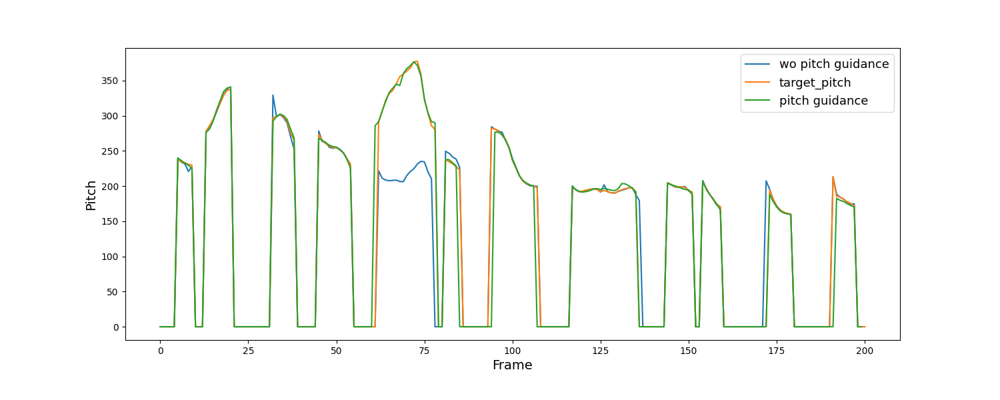
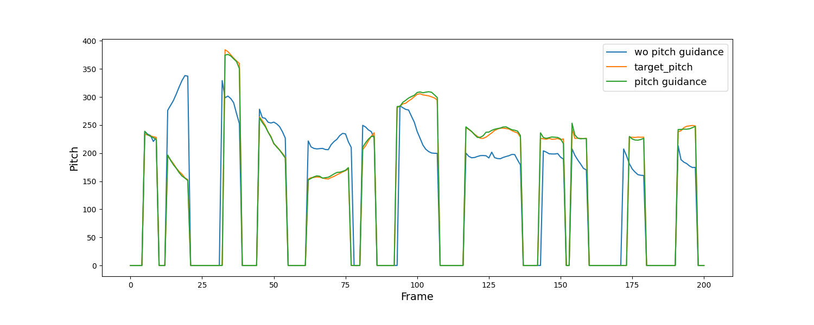
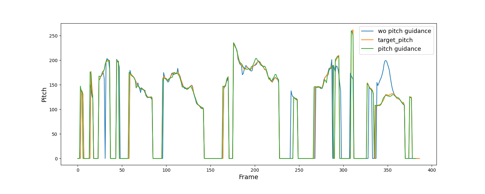
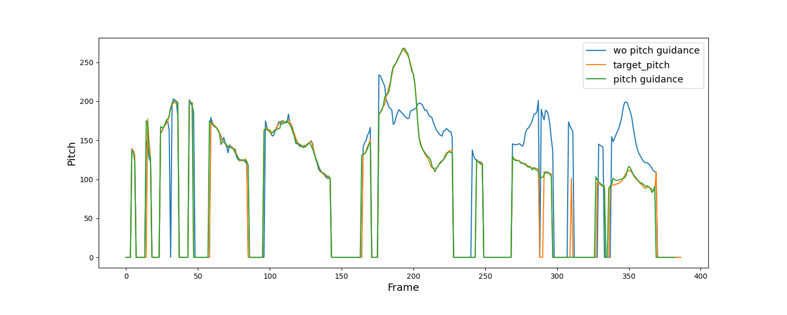
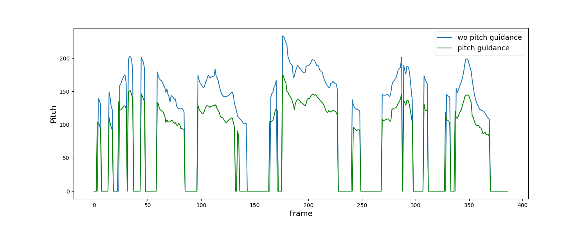

PitchFlow: adding pitch control to a Flow-matching based TTS model
Under review as a conference paper at INTERSPEECH 2024 pdf
Abstract
In recent years, there have been various attempts to improve denoising diffusion probabilistic models and make them more suitable for real-world applications. One of the recentadvances in this research direction is a flow-matching models framework which has already shown good results in image and speech generation tasks. Despite high quality and generation speed, flow-matching text-to-speech models still have problems with stability and control. To mitigate this issue, we propose two techniques: speaker scoring and pitch guidance allowing to control timbre and pitch contour of the generated speech. We show that the optimal choice of the prior leads to considerable improvement of similarity and a specific design of classifier guidance allows for fine-grained pitch control with high naturalness. Moreover, these techniques may be used to implement a voice conversion system of a competitive quality.
1 Zero-shot voice cloning with speaker scoring
In this section we provide audio samples used for evaluation of the proposed speaker scoring technique.
- PitchFlow-32x1 - without speaker scoring
- PitchFlow-32x8 - speaker scoring with batch size b = 8
| Prompt | YourTTS | VALLE | PitchFlow-32x1 | PitchFlow-32x8 |
|---|
2 Zero-shot voice conversion with pitch guidance
In this section we provide audio samples used for evaluation of the pitch guidance technique applied for a voice conversion task.
- PitchFlow - the model with pitch guidance
- PitchFlow + SV - PitchFlow with speaker verification model for additional pitch shifting
3 Fine-grained pitch control
The proposed pitch guidance technique can be used in text-to-speech systems with fine-grained pitch control – for instance, for supporting logical stress in generated speech. Here we demonstrate PitchFlow’s ability to exactly follow the target pitch, modified manually
| Audio without guidance: | |
| Perhaps you think THAT is a queer title for this chapter. | Perhaps YOU think that is a queer title for this chapter. |
|  |  |
| Audio without guidance: | |
| At the British Academy Film Awards, Oppenheimer wins Best Film and SIX other awards. | At the British Academy Film Awards, OPPENHEIMER wins Best Film and six other awards. |
|  |  |
| At the British Academy Film Awards, Oppenheimer wins Best FILM and six other awards. | At the British Academy Film Awards, Oppenheimer wins Best Film and six other awards. (pitch down by 7 bins) |
|  | |
March 2024